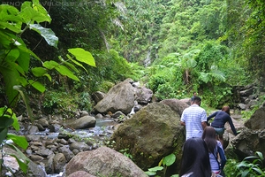
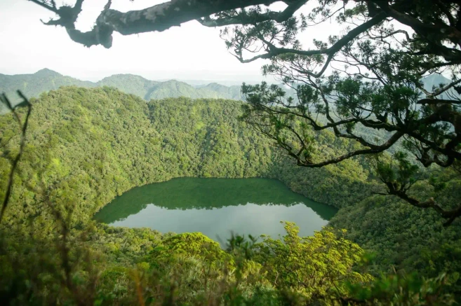
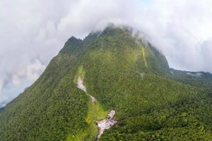
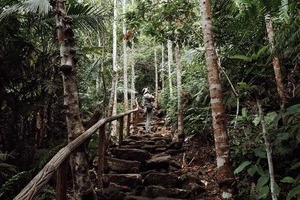

Casaroro Falls Trail
ModerateA striking 100-foot waterfall cascade hidden inside a narrow mountain gorge in Valencia.
View Trail Details
Your ultimate outdoor guide to mountain summits, pristine crater lakes, and volcanic waterfalls.
Browse All Trails
A striking 100-foot waterfall cascade hidden inside a narrow mountain gorge in Valencia.
View Trail Details
Explore volcanic crater lakes and ancient cloud forests on Negros Oriental's second highest peak.
View Trail Details
Tranquil crater lake walks surrounded by protected rainforest fauna and flora.
View Trail Details